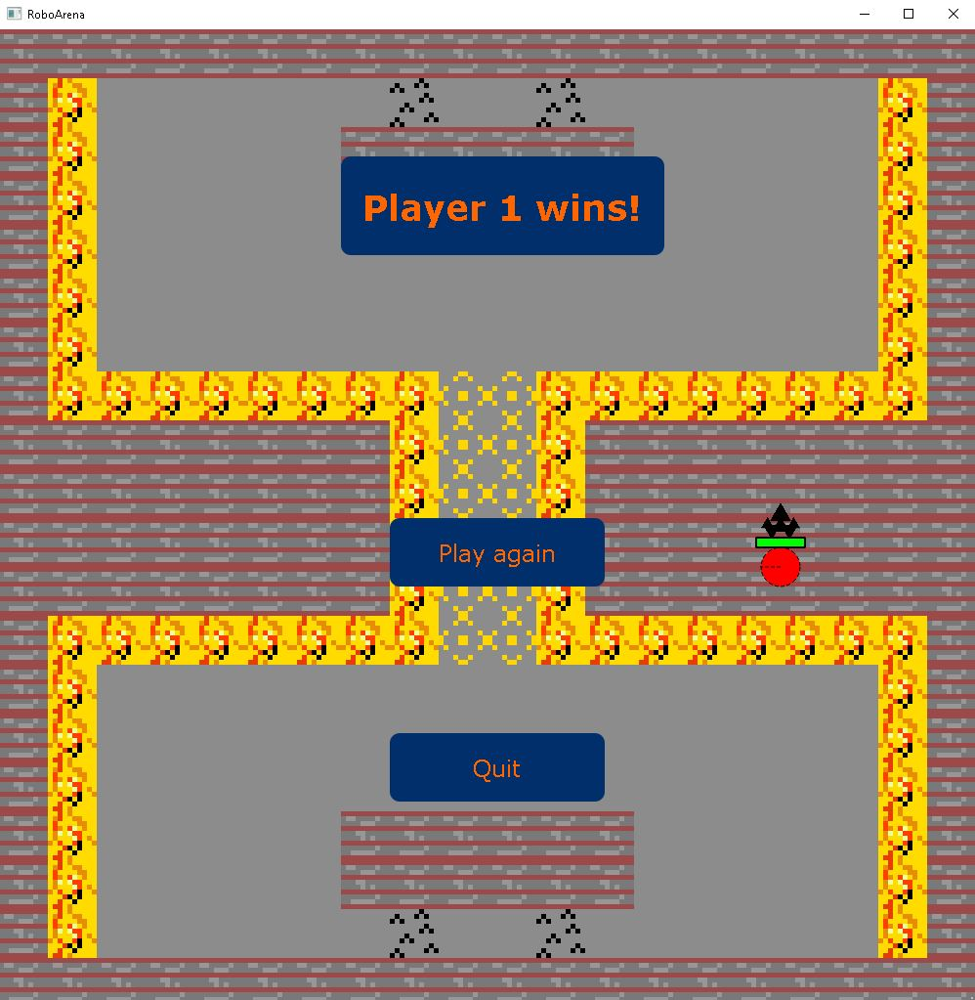
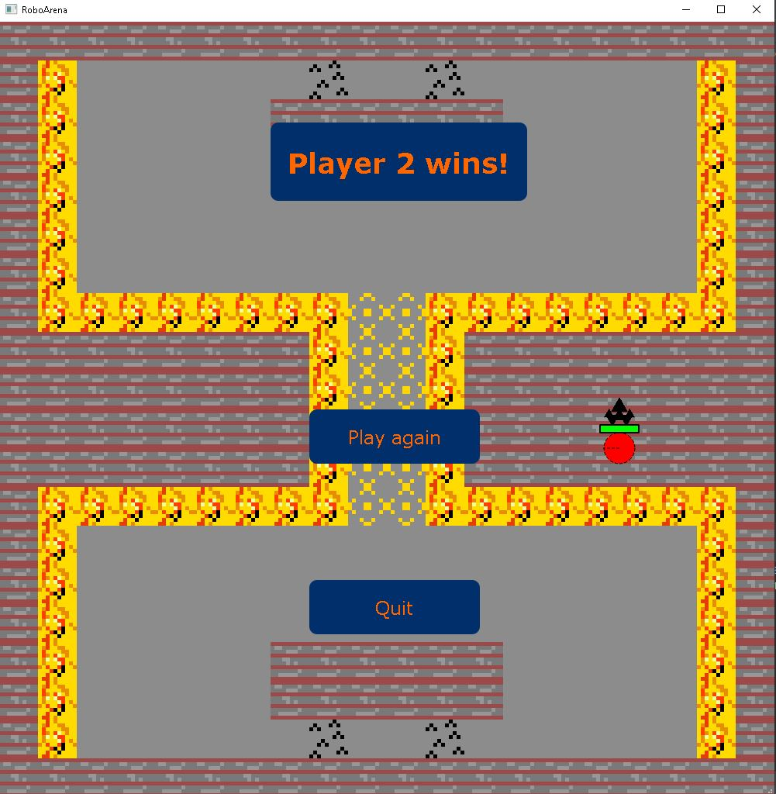
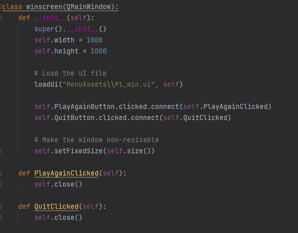
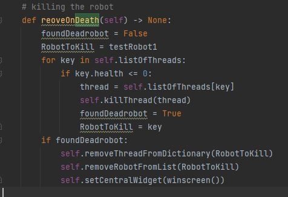

Including Win Screen (Nico)
If one of the players' health drops to 0, a win screen appears.
Player 1 wins:
The background of the win-screen is always the current state of the arena map.
Player 2 wins:
The UI is made in Qt Designer:

- The screenshot shows the stylesheet of the button, which changes the visual appearance.
- Padding refers to the space between the actual content and the elements border.
The winscreen class:
- Clicking the "Play again" button should start an instant rematch.
- The "Quit" button should lead back to the main menu.
The win condition:
- If a dead robot is detected, we let the win screen appear by using the setCentralWidget() function.
- It's the same way we switch between menu windows.
- Compared to other menu windows, we arent loading a background picture.
- Right now the function doesnt differentiate if player 1 or player 2 won.